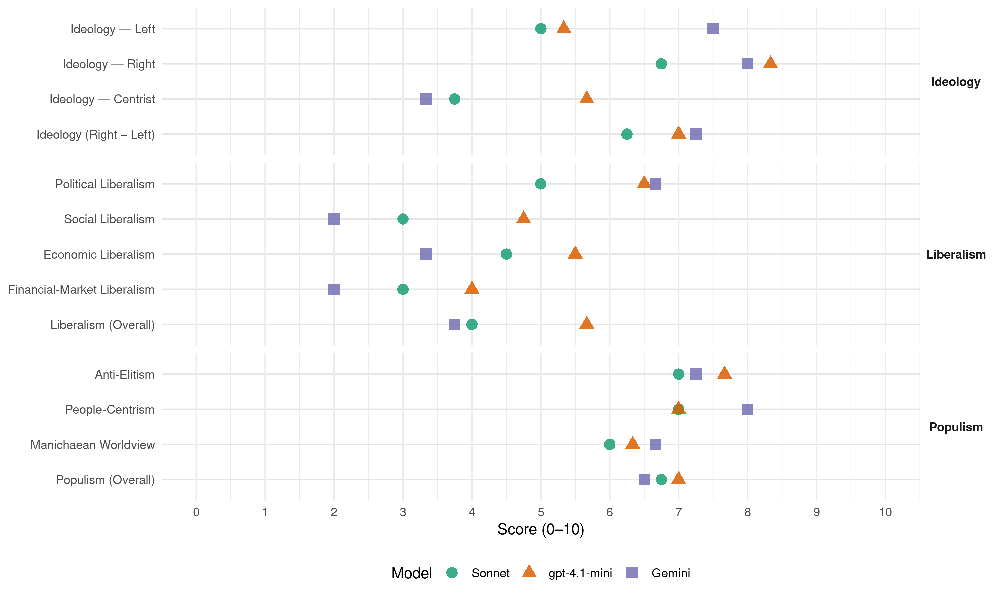

PS (Finland, 2011)
manifesto_id 14820_201104
Get full text: This site shows derived annotations and short verbatim quotes only. The full manifesto text is © Manifesto Project / WZB — obtain it via manifesto-project.wzb.eu using the manifesto_id above.
Headline scores
| Dimension | Sonnet | gpt-4.1-mini | Gemini |
|---|---|---|---|
| Populism (Overall) | 6.8 | 7.0 | 6.5 |
| Anti-Elitism | 7.0 | 7.7 | 7.2 |
| People-Centrism | 7.0 | 7.0 | 8.0 |
| Manichaean Worldview | 6.0 | 6.3 | 6.7 |
| Ideology (Right − Left) | 6.2 | 7.0 | 7.2 |
| Liberalism (Overall) | 4.0 | 5.7 | 3.8 |
| Political Liberalism | 5.0 | 6.5 | 6.7 |
| Social Liberalism | 3.0 | 4.8 | 2.0 |
| Economic Liberalism | 4.5 | 5.5 | 3.3 |
| Financial-Market Liberalism | 3.0 | 4.0 | 2.0 |
Evidence per dimension
Economic Liberalism
Gemini · score 3.0 · verified · chunk 1
“yhteiskunnan ei tule merkittävästi ulkoistaa sosiaali-”
3.2 Peruspalveluita ei tule merkittävästi ulkoistaa Perussuomalaisten mielestä yhteiskunnan ei tule merkittävästi ulkoistaa sosiaali- ja terveyspalveluita yksityisen sektorin tuottamiksi
Gemini · score 3.0 · verified · chunk 2
“pääomatulojen verotuksen tulisi olla myös tulojen mukaan kiristyvää”
ansiokorotusten progressiota. Perussuomalaisten mielestä henkilökohtaisten pääomatulojen verotuksen tulisi olla myös tulojen mukaan kiristyvää, mikä vähentäisi pääoma- ja
Gemini · score 4.0 · verified · chunk 3
“pääomatulojen verotuksen tulisi olla myös tulojen mukaan kiristyvää”
Perussuomalaisten mielestä henkilökohtaisten pääomatulojen verotuksen tulisi olla myös tulojen mukaan kiristyvää
Gemini · score 4.0 · mixed · chunk 4
“Maanomistusoikeutta ei saa nakertaa”
Euroopan halvinta lihaa ja viljaa, joista jalostetaan kalleimpia elintarvikkeita. Maanomistusoikeutta ei saa nakertaa. Kelkkareitit tai maisemakaavat tulee toteuttaa
gpt-4.1-mini · score 4.0 · verified · chunk 1
“Perussuomalaiset eivät hyväksy ylikansallisuutta korostavaa politiikkaa”
Ylikansallisessa politiikassa valtiot eivät ole olemassa omia kansalaisiaan varten, vaan vahvimpia, viime kädessä pääomapiirejä, varten. Tällaista politiikkaa, jossa isännät joutuvat talossaan rengeiksi, me Perussuomalaiset emme hyväksy.
gpt-4.1-mini · score 5.0 · verified · chunk 2
“Veropolitiikassa on viisautta toimia tarpeen mukaan”
…Veropolitiikassa on viisautta toimia tarpeen mukaan, mutta tehdä ratkaisuja aina tästä edellä mainitusta yhteiskunnallisesta arvolähtökohdasta käsin…
gpt-4.1-mini · score 6.0 · verified · chunk 3
“Perussuomalaiset kannustavat työeläkeyhtiöitä sijoittamaan voimakkaasti kotimaiseen infrastruktuuriin, kaivoshankkeisiin ja kasvuyrityksiin”
Perussuomalaiset kannustavat työeläkeyhtiöitä sijoittamaan voimakkaasti kotimaiseen infrastruktuuriin, kaivoshankkeisiin ja kasvuyrityksiin. Työeläkevarat pitää sijoittaa taloudellisesti ja turvatusti, ja rahamme sekä eläkkeemme ovat paremmassa tallessa kotimaisissa investoinneissa kuin Kreikan lainoissa.
gpt-4.1-mini · score 7.0 · verified · chunk 4
“Suomessa tuotetaan Euroopan halvinta lihaa ja viljaa, joista jalostetaan kalleimpia elintarvikkeita”
Suomalaisen elintarvikekaupan keskittymiskehitys on pysäytettävä. Suomessa tuotetaan Euroopan halvinta lihaa ja viljaa, joista jalostetaan kalleimpia elintarvikkeita. Maanomistusoikeutta ei saa nakertaa.
Sonnet · score 3.0 · verified · chunk 1
“yhteiskunnan ei tule merkittävästi ulkoistaa sosiaali- ja terveyspalveluita”
Perussuomalaisten mielestä yhteiskunnan ei tule merkittävästi ulkoistaa sosiaali- ja terveyspalveluita yksityisen sektorin tuottamiksi.
Sonnet · score 4.0 · mixed · chunk 2
“vapaan kaupankäynnin sekä maidenvälisen rauhan”
Parhaimmillaan EU olisi kansainvälinen yhteistyöelin, joka mahdollistaa vapaan kaupankäynnin sekä maidenvälisen rauhan Euroopassa.
Sonnet · score 4.0 · mixed · chunk 3
“pienyrittäjyyteen kannustaminen ja pienyrittäjien aseman vahvistaminen”
Pienyrittäjyyteen kannustaminen ja pienyrittäjien aseman vahvistaminen on tärkeää. Tarvitsemme työllisyysasteen nostamista ikärakenteen muuttuessa kansantalouden näkökulmasta haasteellisemmaksi.
Sonnet · score 6.0 · verified · chunk 4
“Pienien elintarvikejalostajien toimintaa ja markkinoillepääsyä”
Pienien elintarvikejalostajien toimintaa ja markkinoillepääsyä on helpotettava. Pk-yritysten on voitava osallistua julkisiin kilpailuihin.
Financial-Market Liberalism
Gemini · score 2.0 · verified · chunk 1
“työeläkevaroja pitää käyttää nykyistä enemmän suomalaisiin”
sijoitustoiminnalla. Perussuomalaisten mielestä työeläkevaroja pitää käyttää nykyistä enemmän suomalaisiin investointeihin ja innovaatioihin Suomessa.
Gemini · score 2.0 · verified · chunk 2
“yhteiskunnassa ei pidä siirtyä täysin sijoituspohjaiseen eläkevakuutusjärjestelmään”
omaehtoinen eläkevakuutusjärjestelmä saattaa vahvistua ja siis lopulta murentaa nykyisen, kaikille turvallisemman, vaihtoehdon. Mielestämme yhteiskunnassa ei pidä siirtyä täysin sijoituspohjaiseen eläkevakuutusjärjestelmään, jossa eläkkeet ovat sidoksissa
Gemini · score 2.0 · verified · chunk 3
“maksajiksi pitää saattaa suurpääomapiirit ja kansainväliset finanssimarkkinat”
Perussuomalaisten mielestä finanssikriisin maksajiksi pitää saattaa suurpääomapiirit ja kansainväliset finanssimarkkinat tavallisten suomalaisten sijasta.
gpt-4.1-mini · score 4.0 · verified · chunk 3
“Pääomatulojen verotuksen tulisi olla myös tulojen mukaan kiristyvää”
Perussuomalaisten mielestä henkilökohtaisten pääomatulojen verotuksen tulisi olla myös tulojen mukaan kiristyvää, mikä vähentäisi pääoma- ja ansiotulojen verotuksen välistä epäsuhtaa.
Sonnet · score 3.0 · verified · chunk 1
“siirtyä täysin sijoituspohjaiseen eläkevakuutusjärjestelmään”
Mielestämme yhteiskunnassa ei pidä siirtyä täysin sijoituspohjaiseen eläkevakuutusjärjestelmään, jossa eläkkeet ovat sidoksissa vain pörssikursseihin.
Sonnet · score 3.0 · verified · chunk 2
“pörssiveron sekä pankki- ja luottolaitosveron”
Valuutanvaihto- ja pörssiveron sekä pankki- ja luottolaitosveron kaltaisia uusia valtion tulonhankintamuotoja tulee mielestämme selvittää.
Sonnet · score 3.0 · verified · chunk 3
“Valuutanvaihto- ja pörssiveron sekä pankki- ja luottolaitosveron”
Valuutanvaihto- ja pörssiveron sekä pankki- ja luottolaitosveron kaltaisia uusia valtion tulonhankintamuotoja tulee mielestämme selvittää.
Political Liberalism
Gemini · score 7.0 · verified · chunk 1
“toimivan demokratian edellytys on läpinäkyvä päätöksentekojärjestelmä”
pahinta vallankäyttöä on kasvoton valta. Toimivan demokratian edellytys on läpinäkyvä päätöksentekojärjestelmä, jota kansalaisen on helppo ymmärtää
Gemini · score 7.0 · verified · chunk 2
“suoran kansanvallan merkitystä maakunnallisella tasolla”
keskittämään päätöksentekoa maakuntatasolle, haluamme siinä tapauksessa lisätä suoran kansanvallan merkitystä maakunnallisella tasolla. Maakuntavaltuusto olisi silloin valittava
Gemini · score 6.0 · verified · chunk 3
“riippumaton perustuslakituomioistuin”
Ylimmälle valtiotasollemme tarvitaan poliitikoista riippumaton perustuslakituomioistuin.
gpt-4.1-mini · score 7.0 · verified · chunk 1
“Demokratia on kansanvaltaa, eikä se ole mahdollista ilman kansaa”
Demokratia on kansanvaltaa, eikä se ole mahdollista ilman kansaa. Kansa ja ihmisyys perustuvat molemmat pohjimmiltaan yhteisöllisyyteen. Perussuomalaisten mielestä yhteiskuntarakenteiden tulee mahdollistaa ihmisyyden toteuttaminen eli yhteiskunnan tulee perustua ensisijaisesti henkisille arvoille.
gpt-4.1-mini · score 6.0 · verified · chunk 2
“Kansanvallan muutosvoima piilee paikallisuudessa ja kunnissa”
…Kansanvallan muutosvoima piilee paikallisuudessa ja kunnissa, eikä kansanvalta tule toimeen ilman aitoa kuntademokratiaa…
gpt-4.1-mini · score 7.0 · verified · chunk 3
“Suomalaiset luottavat yhä vankasti tuomioistuimiin ja poliisiin”
Suomalaiset ovat perinteisesti kunnioittaneet lakia, oikeudenmukaisuutta ja hyvää järjestystä. Perussuomalaiset kunnioittavat edelleen näitä kansallisia perusarvoja ja uskaltavat myös lausua sen julki. Tavalliset suomalaiset luottavat yhä vankasti tuomioistuimiin ja poliisiin, kuten mielipidekyselyt ovat toistuvasti osoittaneet.
gpt-4.1-mini · score 6.0 · verified · chunk 4
“Poliisin tai ambulanssin odottelussa tunti on pitkä aika”
Viranomaisten palveluja on saatava syrjäseuduillakin. Poliisin tai ambulanssin odottelussa tunti on pitkä aika. Kyläkoulujen toimintaedellytyksiä ei saa rajata uusilla vaatimuksilla
Sonnet · score 4.0 · mixed · chunk 1
“Toimivan demokratian edellytys on läpinäkyvä päätöksentekojärjestelmä”
Toimivan demokratian edellytys on läpinäkyvä päätöksentekojärjestelmä, jota kansalaisen on helppo ymmärtää ja seurata. Näin vaalituloksen merkitys korostuu ja demokratia vahvistuu.
Sonnet · score 5.0 · mixed · chunk 2
“suoran demokratian merkitystä osana edustuksellista demokratiaa”
Perussuomalaiset haluavat korostaa myös suoran demokratian merkitystä osana edustuksellista demokratiaa. Mahdolliset kuntaliitokset on tehtävä vain neuvoa-antavien kunnallisten kansanäänestysten myötävaikutuksella
Sonnet · score 5.0 · verified · chunk 3
“riippumattoman perustuslakituomioistuimen”
Ylimmälle valtiotasollemme tarvitaan poliitikoista riippumaton perustuslakituomioistuin. Eduskunnan perustuslakivaliokunnan huono soveltuvuus ‘tuomioistuimeksi’ ilmeni viimeksi
Sonnet · score 5.0 · verified · chunk 4
“Kaatoluvat on päätettävä paikallisesti”
Petopolitiikkaan on saatava tolkku. Kaatoluvat on päätettävä paikallisesti. Metsästysharrastuksen aloittamista on helpotettava.
Liberalism (Overall)
Gemini · score 4.0 · verified · chunk 1
“Emme usko oikeistolaiseen rahavaltaan emmekä vasemmistolaiseen”
ja kristillissosiaalinen puolue. Emme usko oikeistolaiseen rahavaltaan emmekä vasemmistolaiseen järjestelmävaltaan. Uskomme ja luomme ensisijaisesti
Gemini · score 3.0 · verified · chunk 2
“eivät hyväksy samaa sukupuolta olevien vihkimistä”
todellinen ratkaisu väestörakenteen korjaamiseksi. Perussuomalaiset eivät hyväksy samaa sukupuolta olevien vihkimistä avioliittoon, sillä avioliitto on tarkoitettu
Gemini · score 4.0 · verified · chunk 3
“riippumaton perustuslakituomioistuin”
Ylimmälle valtiotasollemme tarvitaan poliitikoista riippumaton perustuslakituomioistuin.
Gemini · score 4.0 · verified · chunk 4
“Maanomistusoikeutta ei saa nakertaa”
Euroopan halvinta lihaa ja viljaa, joista jalostetaan kalleimpia elintarvikkeita. Maanomistusoikeutta ei saa nakertaa. Kelkkareitit tai maisemakaavat tulee toteuttaa
gpt-4.1-mini · score 5.0 · mixed · chunk 1
“Demokratia on kansanvaltaa, eikä se ole mahdollista ilman kansaa”
Demokratia on kansanvaltaa, eikä se ole mahdollista ilman kansaa. Kansa ja ihmisyys perustuvat molemmat pohjimmiltaan yhteisöllisyyteen. Perussuomalaisten mielestä yhteiskuntarakenteiden tulee mahdollistaa ihmisyyden toteuttaminen eli yhteiskunnan tulee perustua ensisijaisesti henkisille arvoille.
gpt-4.1-mini · score 5.0 · verified · chunk 2
“Veropolitiikassa on viisautta toimia tarpeen mukaan”
…Veropolitiikassa on viisautta toimia tarpeen mukaan, mutta tehdä ratkaisuja aina tästä edellä mainitusta yhteiskunnallisesta arvolähtökohdasta käsin…
gpt-4.1-mini · score 6.0 · verified · chunk 3
“Perussuomalaiset kannustavat työeläkeyhtiöitä sijoittamaan voimakkaasti kotimaiseen infrastruktuuriin, kaivoshankkeisiin ja kasvuyrityksiin”
Perussuomalaiset kannustavat työeläkeyhtiöitä sijoittamaan voimakkaasti kotimaiseen infrastruktuuriin, kaivoshankkeisiin ja kasvuyrityksiin. Työeläkevarat pitää sijoittaa taloudellisesti ja turvatusti, ja rahamme sekä eläkkeemme ovat paremmassa tallessa kotimaisissa investoinneissa kuin Kreikan lainoissa.
gpt-4.1-mini · score 6.0 · verified · chunk 4
“Poliisin tai ambulanssin odottelussa tunti on pitkä aika”
Viranomaisten palveluja on saatava syrjäseuduillakin. Poliisin tai ambulanssin odottelussa tunti on pitkä aika. Kyläkoulujen toimintaedellytyksiä ei saa rajata uusilla vaatimuksilla
Sonnet · score 3.0 · verified · chunk 1
“yltiömarkkinavetoisen suunnan, joka Suomessa on”
Perussuomalaiset ovat valmiita kaikin mahdollisin keinoin muuttamaan sen yltiömarkkinavetoisen suunnan, joka Suomessa on mm. erilaisten julkisten hankintojen ja palveluiden kilpailuttamisessa otettu.
Sonnet · score 4.0 · mixed · chunk 2
“finanssikriisin maksajiksi pitää saattaa suurpääomapiirit”
Perussuomalaisten mielestä finanssikriisin maksajiksi pitää saattaa suurpääomapiirit ja kansainväliset finanssimarkkinat tavallisten suomalaisten sijasta.
Sonnet · score 4.0 · mixed · chunk 3
“finanssikriisin maksajiksi pitää saattaa suurpääomapiirit”
Perussuomalaisten mielestä finanssikriisin maksajiksi pitää saattaa suurpääomapiirit ja kansainväliset finanssimarkkinat tavallisten suomalaisten sijasta.
Sonnet · score 5.0 · verified · chunk 4
“Pk-yritysten on voitava osallistua julkisiin kilpailuihin”
Pienien elintarvikejalostajien toimintaa ja markkinoillepääsyä on helpotettava. Pk-yritysten on voitava osallistua julkisiin kilpailuihin.
Anti-Elitism
Gemini · score 8.0 · verified · chunk 1
“Poliittinen eliitti on ruokkinut kansalaisten materiakeskeisiä tarpeita”
Euroopan kuilun partaalle. Poliittinen eliitti on ruokkinut kansalaisten materiakeskeisiä tarpeita ja saattanut näin koko Euroopan kuilun
Gemini · score 8.0 · verified · chunk 2
“valta ei ole EU:ssa koskaan kansoilla, vaan eliitillä”
suurpääomapiirien hallita – valta ei ole EU:ssa koskaan kansoilla, vaan eliitillä. Kansat ovat vain maksajan roolissa
Gemini · score 8.0 · verified · chunk 3
“toimitaan yhä enemmän pääomapiirien ehdoilla”
kansalaisten yhteisöllisyys heikkenee ja näin paitsi markkinoilla myös politiikassa toimitaan yhä enemmän pääomapiirien ehdoilla.
Gemini · score 5.0 · verified · chunk 4
“Suomalaista metsänhoitoa perusteettomasti mollaavilta järjestöiltä on otettava avustukset pois”
metsäautotieavustuksia on tarvittaessa korotettava. Suomalaista metsänhoitoa perusteettomasti mollaavilta järjestöiltä on otettava avustukset pois. Suomessa tuotetun metsäenergian lisäksi
gpt-4.1-mini · score 9.0 · verified · chunk 1
“Poliittinen eliitti on ruokkinut kansalaisten materiakeskeisiä tarpeita”
Eurooppalaisten hyvinvointivaltioiden talouskriisi on vastuuttoman poliittisen johtamisen seurausta. Kyseessä on harjoitetun politiikan kriisi. Poliittinen eliitti on ruokkinut kansalaisten materiakeskeisiä tarpeita ja saattanut näin koko Euroopan kuilun partaalle.
gpt-4.1-mini · score 7.0 · verified · chunk 2
“EU:ssa ei koskaan kansoilla, vaan eliitillä”
…EU:n alueella asuvia on helppo suurpääomapiirien hallita – valta ei ole EU:ssa koskaan kansoilla, vaan eliitillä. Kansat ovat vain maksajan roolissa, kuten Kreikan ja Irlannin kriiseissä…
gpt-4.1-mini · score 7.0 · verified · chunk 3
“finanssikriisin maksajiksi pitää saattaa suurpääomapiirit ja kansainväliset finanssimarkkinat tavallisten suomalaisten sijasta”
Perussuomalaisten mielestä finanssikriisin maksajiksi pitää saattaa suurpääomapiirit ja kansainväliset finanssimarkkinat tavallisten suomalaisten sijasta.
Sonnet · score 9.0 · verified · chunk 1
“Poliittinen eliitti on ruokkinut kansalaisten”
Eurooppalaisten hyvinvointivaltioiden talouskriisi on vastuuttoman poliittisen johtamisen seurausta. Poliittinen eliitti on ruokkinut kansalaisten materiakeskeisiä tarpeita ja saattanut näin koko Euroopan kuilun partaalle.
Sonnet · score 8.0 · verified · chunk 2
“poliittinen eliitti ajaa Suomen kuntakenttää”
Perussuomalaiset eivät ole tyytyväisiä siihen, että poliittinen eliitti ajaa Suomen kuntakenttää kohti suurempia ja hallinnollisesti hajanaisempia yksiköitä.
Sonnet · score 7.0 · verified · chunk 3
“Vallassaolijat uskottelevat kansalle”
Suomen taloudellista ja teollista pohjaa on vahvistettava. Vallassaolijat uskottelevat kansalle, että talouden kasvumerkit ovat näkyvissä. Tämä on kvartaalitalouden sokea piste.
Sonnet · score 4.0 · verified · chunk 4
“Suomalaista metsänhoitoa perusteettomasti mollaavilta järjestöiltä”
on otettava avustukset pois. Suomalaista metsänhoitoa perusteettomasti mollaavilta järjestöiltä on otettava avustukset pois.
Ideology — Centrist
Gemini · score 4.0 · verified · chunk 1
“jokainen on oman elämänsä asiantuntija”
sivuutetaan. Perussuomalaisten mielestä jokainen on oman elämänsä asiantuntija. Ajattelua ei voi ulkoistaa.
Gemini · score 3.0 · verified · chunk 2
“Kyllä kuntalainen tietää”
6 Vahva peruskunta – Perussuomalaisten kuntapolitiikka 6.1 Kyllä kuntalainen tietää! Perussuomalaiset ovat kansanvallan puolestapuhujia.
Gemini · score 3.0 · verified · chunk 3
“keskiössä tulee olla ihminen”
Veropolitiikan, kuten kaiken muunkin politiikan, keskiössä tulee olla ihminen.
gpt-4.1-mini · score 7.0 · verified · chunk 1
“Populistinen eli kansan suosioon perustuva demokratiakäsitys elitistisen sijaan”
Perussuomalaiset kannattavat populistista eli kansan suosioon perustuvaa demokratiakäsitystä elitistisen eli byrokraattisen demokratiakäsityksen sijaan.
gpt-4.1-mini · score 5.0 · verified · chunk 2
“Kansanvallan muutosvoima piilee paikallisuudessa ja kunnissa”
…Kansanvallan muutosvoima piilee paikallisuudessa ja kunnissa, eikä kansanvalta tule toimeen ilman aitoa kuntademokratiaa…
gpt-4.1-mini · score 5.0 · verified · chunk 3
“Perussuomalaisten mielestä yhteiskunta on olemassa jokaisen ihmisen ihmisarvoisen elämän mahdollistamiseksi”
Perussuomalaisten mielestä yhteiskunta on olemassa jokaisen ihmisen ihmisarvoisen elämän mahdollistamiseksi. Veropolitiikassa on viisautta toimia tarpeen mukaan, mutta tehdä ratkaisuja aina tästä edellä mainitusta yhteiskunnallisesta arvolähtökohdasta käsin.
Sonnet · score 4.0 · verified · chunk 1
“jokainen on oman elämänsä asiantuntija”
Perussuomalaisten mielestä jokainen on oman elämänsä asiantuntija. Ajattelua ei voi ulkoistaa.
Sonnet · score 3.0 · verified · chunk 2
“Perussuomalaiset ei ole eturyhmäpuolue, vaan arvopuolue”
Perussuomalaiset ei ole eturyhmäpuolue, vaan arvopuolue ja siksi meillä ei ole historiallista painolastia harteillamme estämässä Suomen ja suomalaisten tulevaisuuden kannalta parhaimpien ratkaisujen toteuttamista.
Sonnet · score 3.0 · verified · chunk 3
“Veropolitiikan, kuten kaiken muunkin politiikan, keskiössä tulee olla ihminen”
Veropolitiikassa on viisautta toimia tarpeen mukaan, mutta tehdä ratkaisuja aina tästä edellä mainitusta yhteiskunnallisesta arvolähtökohdasta käsin. Veropolitiikan, kuten kaiken muunkin politiikan, keskiössä tulee olla ihminen.
Sonnet · score 5.0 · verified · chunk 4
“Pienet tilat on vapautettava jokavuotisesta tukihakemusbyrokratiasta”
Pienet tilat on vapautettava jokavuotisesta tukihakemusbyrokratiasta. Näille tiloille valmisteltava mahdollisuus kevennettyyn veroilmoitusmenettelyyn.
Ideology — Left
Gemini · score 5.0 · mixed · chunk 1
“Emme usko oikeistolaiseen rahavaltaan emmekä vasemmistolaiseen”
ja kristillissosiaalinen puolue. Emme usko oikeistolaiseen rahavaltaan emmekä vasemmistolaiseen järjestelmävaltaan. Uskomme ja luomme ensisijaisesti
Gemini · score 7.0 · verified · chunk 2
“finanssikriisin maksajiksi pitää saattaa suurpääomapiirit”
ympäristöverojen muodossa pieni- ja keskituloisille kansalaisille vaarantaen samalla teollisuustyöpaikat. Perussuomalaisten mielestä finanssikriisin maksajiksi pitää saattaa suurpääomapiirit ja kansainväliset finanssimarkkinat
Gemini · score 8.0 · verified · chunk 3
“maksajiksi pitää saattaa suurpääomapiirit”
Perussuomalaisten mielestä finanssikriisin maksajiksi pitää saattaa suurpääomapiirit ja kansainväliset finanssimarkkinat tavallisten suomalaisten sijasta.
gpt-4.1-mini · score 6.0 · verified · chunk 1
“tulonsiirtojen tarkoitus on ehkäistä hyvinvointierojen kasvua”
Tulonsiirtojen tarkoitus on ehkäistä hyvinvointierojen kasvua. Perus- ja vähimmäisturvaetuudet on jätetty ansiotason kehityksestä 30–40 % jälkeen viimeisen kahdenkymmenen vuoden aikana.
gpt-4.1-mini · score 3.0 · verified · chunk 2
“Finanssikriisin maksajiksi pitää saattaa suurpääomapiirit”
…Perussuomalaiset vastustavat ns. vihreää verouudistusta… Finanssikriisin maksajiksi pitää saattaa suurpääomapiirit ja kansainväliset finanssimarkkinat tavallisten suomalaisten sijasta…
gpt-4.1-mini · score 7.0 · verified · chunk 3
“Perussuomalaiset vastustavat ns. vihreää verouudistusta, sillä uudistus on vain peitesana verorasituksen siirtämiselle kulutus- ja ympäristöverojen muodossa pieni- ja keskituloisille kansalaisille”
Perussuomalaisten vastustavat ns. vihreää verouudistusta, sillä uudistus on vain peitesana verorasituksen siirtämiselle kulutus- ja ympäristöverojen muodossa pieni- ja keskituloisille kansalaisille vaarantaen samalla teollisuustyöpaikat.
Sonnet · score 7.0 · verified · chunk 1
“Emme usko oikeistolaiseen rahavaltaan”
Perussuomalaiset on kansallismielinen ja kristillissosiaalinen puolue. Emme usko oikeistolaiseen rahavaltaan emmekä vasemmistolaiseen järjestelmävaltaan.
Sonnet · score 4.0 · verified · chunk 2
“finanssikriisin maksajiksi pitää saattaa suurpääomapiirit”
Perussuomalaisten mielestä finanssikriisin maksajiksi pitää saattaa suurpääomapiirit ja kansainväliset finanssimarkkinat tavallisten suomalaisten sijasta.
Sonnet · score 6.0 · verified · chunk 3
“rikkaat rikastuvat, mutta köyhät köyhtyvät”
Emme kannata kehitystä kohti tasaveroa, jossa rikkaat rikastuvat, mutta köyhät köyhtyvät. Jo nyt on havaittavissa, että valtion verokertymästä yhä suurempi osa tulee tasaveroista
Sonnet · score 3.0 · verified · chunk 4
“Suomalaisen elintarvikekaupan keskittymiskehitys on pysäytettävä”
Suomalaisen elintarvikekaupan keskittymiskehitys on pysäytettävä. Suomessa tuotetaan Euroopan halvinta lihaa ja viljaa.
Ideology (Right − Left)
Gemini · score 8.0 · verified · chunk 1
“Perussuomalaiset on kansallismielinen ja kristillissosiaalinen puolue”
1.2 Ihmisen puolella Perussuomalaiset on kansallismielinen ja kristillissosiaalinen puolue. Emme usko oikeistolaiseen rahavaltaan
Gemini · score 8.0 · verified · chunk 2
“maahanmuutto ei takaa ikärakenteen korjaantumista”
Korvamerkityt valtionosuudet olisivatkin tämän takia tarpeellisia. Perussuomalaisten mielestä maahanmuutto ei takaa ikärakenteen korjaantumista kestävällä tavalla, sillä maahanmuuttajat
Gemini · score 8.0 · verified · chunk 3
“maksajiksi pitää saattaa suurpääomapiirit”
Perussuomalaisten mielestä finanssikriisin maksajiksi pitää saattaa suurpääomapiirit ja kansainväliset finanssimarkkinat tavallisten suomalaisten sijasta.
Gemini · score 5.0 · verified · chunk 4
“GMO:n tuonti on esitettävä kiellettäväksi”
lautakunnalta koelupien myöntövaltuudet on siirrettävä valtioneuvostolle. GMO:n tuonti on esitettävä kiellettäväksi. Eläinten kloonausta ei tule sallia.
gpt-4.1-mini · score 8.0 · verified · chunk 1
“Populismi ei ole yleismaailmallinen aate, kuten sosialismi ja kapitalismi”
Populismi ei ole yleismaailmallinen aate, kuten sosialismi ja kapitalismi, vaan se on aina sidonnainen kulttuuriin ja kansanluonteeseen. Jo puolueemme nimi Perussuomalaiset kertoo, että politiikkamme perustuu Suomen historiaan ja suomalaiseen kulttuuriin.
gpt-4.1-mini · score 6.0 · verified · chunk 2
“Missä EU, siellä ongelma”
…Tähän asti ikävä tosiasia on ollut: Missä EU, siellä ongelma! Perussuomalaiset peräänkuuluttavat todellista aatteellista keskustelua unionista…
gpt-4.1-mini · score 7.0 · verified · chunk 3
“Perussuomalaiset vastustavat ns. vihreää verouudistusta, sillä uudistus on vain peitesana verorasituksen siirtämiselle kulutus- ja ympäristöverojen muodossa pieni- ja keskituloisille kansalaisille”
Perussuomalaisten vastustavat ns. vihreää verouudistusta, sillä uudistus on vain peitesana verorasituksen siirtämiselle kulutus- ja ympäristöverojen muodossa pieni- ja keskituloisille kansalaisille vaarantaen samalla teollisuustyöpaikat.
Sonnet · score 8.0 · verified · chunk 1
“kansallismielinen ja kristillissosiaalinen puolue”
Perussuomalaiset on kansallismielinen ja kristillissosiaalinen puolue. Emme usko oikeistolaiseen rahavaltaan emmekä vasemmistolaiseen järjestelmävaltaan.
Sonnet · score 7.0 · verified · chunk 2
“Suomessa elämämme kuitenkin suomalaisin ehdoin”
Tulemme ja haluamme tulla toimeen muiden kansojen ja kulttuurien kanssa. Suomessa elämämme kuitenkin suomalaisin ehdoin ja se merkitsee sitä, että me pidämme joulujuhlamme ja laulamme suvivirtemme
Sonnet · score 6.0 · verified · chunk 3
“suurpääomapiirit ja kansainväliset finanssimarkkinat”
finanssikriisin maksajiksi pitää saattaa suurpääomapiirit ja kansainväliset finanssimarkkinat tavallisten suomalaisten sijasta.
Sonnet · score 4.0 · verified · chunk 4
“Kotimainen energia korvaamaan fossiilienergian”
Kotimainen energia korvaamaan fossiilienergian lämmöntuotannossa. Yhdistetystä sähkön- ja lämmöntuotannosta sekä biokaasulaitoksista saadaan turvaa energiahuoltoon.
Ideology — Right
Gemini · score 8.0 · verified · chunk 1
“itsenäisten kansallisvaltioiden ja suomalaisen kulttuurin puolestapuhujia”
kulttuureihin. Kulttuurit ovat ihmiskunnan rikkaus. Kestävää hyvinvointia ei kyetä rakentamaan tyhjän päälle. Perussuomalaiset haluavat olla itsenäisten kansallisvaltioiden ja suomalaisen kulttuurin puolestapuhujia.
Gemini · score 9.0 · verified · chunk 2
“maahanmuutto ei takaa ikärakenteen korjaantumista”
Korvamerkityt valtionosuudet olisivatkin tämän takia tarpeellisia. Perussuomalaisten mielestä maahanmuutto ei takaa ikärakenteen korjaantumista kestävällä tavalla, sillä maahanmuuttajat
Gemini · score 9.0 · verified · chunk 3
“maahanmuuttajat on karkotettava maasta”
Vakavaan rikokseen tai toistuviin rikoksiin syyllistyneet maahanmuuttajat on karkotettava maasta.
Gemini · score 6.0 · verified · chunk 4
“GMO:n tuonti on esitettävä kiellettäväksi”
lautakunnalta koelupien myöntövaltuudet on siirrettävä valtioneuvostolle. GMO:n tuonti on esitettävä kiellettäväksi. Eläinten kloonausta ei tule sallia.
gpt-4.1-mini · score 9.0 · verified · chunk 1
“Perussuomalaiset haluavat puolustaa suomalaisten omaa kansansuvereniteettia”
Perussuomalaiset haluavat puolustaa suomalaisten omaa kansansuvereniteettia, joka merkitsee sitä, että vain ja yksinomaan kansalla, joka muodostaa oman, muista kansoista erillisen kansakunnan, on ikuinen ja rajoittamaton oikeus päättää aina vapaasti ja itsenäisesti kaikista omista asioistaan.
gpt-4.1-mini · score 8.0 · verified · chunk 2
“Suomalaiset eivät ole sen älykkäämpiä kuin muutkaan kansat”
…Suomalaiset eivät ole kuitenkaan koskaan muuttuneet yksin ajan ehdoilla… Suomen kilpailuetu verrattuna muihin maihin on suomalainen yhteiskunta ja suomalaisuus…
gpt-4.1-mini · score 8.0 · verified · chunk 3
“Kansainvaellukset eivät ratkaise ongelmia, vaan synnyttävät niitä”
Perussuomalaiset eivät näe kestävänä kehitystä, jossa painotetaan kansalaisten vapaata liikkuvuutta yli maiden rajojen siten, että kansalaisia käytännössä yhä enemmän pakotetaan vaeltamaan alueelta toiselle elantonsa perässä.
Sonnet · score 8.0 · verified · chunk 1
“puolustaa suomalaisten omaa kansansuvereniteettia”
Perussuomalaiset haluavat puolustaa suomalaisten omaa kansansuvereniteettia, joka merkitsee sitä, että vain ja yksinomaan kansalla… on ikuinen ja rajoittamaton oikeus päättää vapaasti.
Sonnet · score 8.0 · verified · chunk 2
“maahanmuutto ei takaa ikärakenteen korjaantumista”
Perussuomalaisten mielestä maahanmuutto ei takaa ikärakenteen korjaantumista kestävällä tavalla, sillä maahanmuuttajat eivät lopullisesti kotouduttuaan todennäköisesti hanki yhtään sen enempää lapsia
Sonnet · score 7.0 · verified · chunk 3
“kansalaisuuden tulee olla palkinto”
Mielestämme kansalaisuuden tulee olla palkinto ja tunnustus jo tapahtuneesta integroitumisesta. Pelkkä Suomessa vietetty aika ei voi olla peruste kansalaisuuden myöntämiselle
Sonnet · score 4.0 · verified · chunk 4
“Geenimuuntelusta vapaa Suomi”
Geenimuuntelusta vapaa Suomi. GMO-merkinnät on otettava viipymättä käyttöön.
Manichaean Worldview
Gemini · score 7.0 · verified · chunk 1
“edistää omia harvainvaltaisia pyrkimyksiään kohti entistäkin elitistisempää”
kaventanut kansanvaltaisia päätöksentekorakenteita… poliittinen eliitti on halunnut edistää omia harvainvaltaisia pyrkimyksiään kohti entistäkin elitistisempää ja eriarvoisempaa yhteiskuntaa.
Gemini · score 7.0 · verified · chunk 2
“salakavalasti leikkasivat eläkkeitä muiden leikkausten lisäksi”
muuttivat vuonna 1996 lakia ja siten salakavalasti leikkasivat eläkkeitä muiden leikkausten lisäksi. Pidämme nykyistä eläkkeiden karttumaprosentteja
Gemini · score 6.0 · verified · chunk 3
“rikkaat rikastuvat, mutta köyhät köyhtyvät”
Emme kannata kehitystä kohti tasaveroa, jossa rikkaat rikastuvat, mutta köyhät köyhtyvät.
gpt-4.1-mini · score 8.0 · verified · chunk 1
“poliittinen eliitti on halunnut edistää omia harvainvaltaisia pyrkimyksiään”
Kansanvallan kaventaminen on suurin uhka tulevaisuuden hyvinvoinnille. Kaventamalla kansanvaltaista päätöksentekoa poliittinen eliitti on halunnut edistää omia harvainvaltaisia pyrkimyksiään kohti entistäkin elitistisempää ja eriarvoisempaa yhteiskuntaa.
gpt-4.1-mini · score 5.0 · verified · chunk 2
“Missä EU, siellä ongelma”
…Tähän asti ikävä tosiasia on ollut: Missä EU, siellä ongelma! Perussuomalaiset peräänkuuluttavat todellista aatteellista keskustelua unionista…
gpt-4.1-mini · score 6.0 · verified · chunk 3
“Osoittamalla piittaamattomuutta Suomen lakeja ja suomalaisia kohtaan maahanmuuttajan on katsottava luopuneen vapaaehtoisesti niistä oikeuksista”
Osoittamalla piittaamattomuutta Suomen lakeja ja suomalaisia kohtaan maahanmuuttajan on katsottava luopuneen vapaaehtoisesti niistä oikeuksista ja eduista, jotka Suomi on hänelle tarjonnut.
Sonnet · score 8.0 · verified · chunk 1
“poliittinen eliitti on halunnut edistää omia harvainvaltaisia”
Kaventamalla kansanvaltaista päätöksentekoa poliittinen eliitti on halunnut edistää omia harvainvaltaisia pyrkimyksiään kohti entistäkin elitistisempää ja eriarvoisempaa yhteiskuntaa.
Sonnet · score 7.0 · verified · chunk 2
“valta ei ole EU:ssa koskaan kansoilla, vaan eliitillä”
EU:n alueella asuvia on helppo suurpääomapiirien hallita – valta ei ole EU:ssa koskaan kansoilla, vaan eliitillä. Kansat ovat vain maksajan roolissa
Sonnet · score 6.0 · verified · chunk 3
“pääomapiirien ehdoilla”
paitsi markkinoilla myös politiikassa toimitaan yhä enemmän pääomapiirien ehdoilla. Perussuomalaisten mielestä työnteon ja työllistämisen merkityksen erotuksena pääomien yhteiskunnalliselle merkitykselle tulee näkyä veropolitiikassa
Sonnet · score 3.0 · verified · chunk 4
“Hygieniamääräykset pilaavat suomalaisen kalan”
Suomalaista tuoretta kalaa on saatava kauppoihin. Hygieniamääräykset pilaavat suomalaisen kalan.
People-Centrism
Gemini · score 9.0 · verified · chunk 1
“Demokratia on kansanvaltaa, eikä se ole mahdollista ilman kansaa”
kehittäminen yhteiskunnaksi ja kansanvallaksi on mahdollista. Demokratia on kansanvaltaa, eikä se ole mahdollista ilman kansaa. Kansa ja ihmisyys perustuvat molemmat
Gemini · score 8.0 · verified · chunk 2
“Perussuomalaiset ovat kansanvallan puolestapuhujia”
6 Vahva peruskunta – Perussuomalaisten kuntapolitiikka 6.1 Kyllä kuntalainen tietää! Perussuomalaiset ovat kansanvallan puolestapuhujia. Haluamme kääntää valtapuolueiden ajaman
Gemini · score 7.0 · verified · chunk 3
“keskiössä tulee olla ihminen”
Veropolitiikan, kuten kaiken muunkin politiikan, keskiössä tulee olla ihminen. Se, miten tyytyväisiä kansalaiset ovat
gpt-4.1-mini · score 9.0 · verified · chunk 1
“Kansa ja ihmisyys perustuvat molemmat pohjimmiltaan yhteisöllisyyteen”
Demokratia on kansanvaltaa, eikä se ole mahdollista ilman kansaa. Kansa ja ihmisyys perustuvat molemmat pohjimmiltaan yhteisöllisyyteen. Perussuomalaisten mielestä yhteiskuntarakenteiden tulee mahdollistaa ihmisyyden toteuttaminen eli yhteiskunnan tulee perustua ensisijaisesti henkisille arvoille.
gpt-4.1-mini · score 6.0 · verified · chunk 2
“Suomalaiset eivät ole sen älykkäämpiä kuin muutkaan kansat”
…Suomalaiset eivät ole kuitenkaan koskaan muuttuneet yksin ajan ehdoilla. Jos me niin olisimme tehneet, olisimme ehkä itsenäistyneet vasta noin 20 vuotta sitten. Tämä tulee pitää mielessä…
gpt-4.1-mini · score 6.0 · verified · chunk 3
“Jokaisen työhön kykenevän Suomen kansalaisen on maksukykynsä perusteella maksettava veroja”
Perussuomalainen veropolitiikka perustuu sosiaaliselle oikeudenmukaisuudelle. Jokaisen työhön kykenevän Suomen kansalaisen on maksukykynsä perusteella maksettava veroja, jotta valtio pystyy kaventamaan tulo- ja hyvinvointieroja.
Sonnet · score 9.0 · verified · chunk 1
“Perussuomalaiset kannattavat populistista eli kansan suosioon perustuvaa”
Perussuomalaiset kannattavat populistista eli kansan suosioon perustuvaa demokratiakäsitystä elitistisen eli byrokraattisen demokratiakäsityksen sijaan.
Sonnet · score 8.0 · verified · chunk 2
“kansanvallan muutosvoima piilee paikallisuudessa”
Kansanvallan muutosvoima piilee paikallisuudessa ja kunnissa, eikä kansanvalta tule toimeen ilman aitoa kuntademokratiaa.
Sonnet · score 7.0 · verified · chunk 3
“tavallisten suomalaisten sijasta”
finanssikriisin maksajiksi pitää saattaa suurpääomapiirit ja kansainväliset finanssimarkkinat tavallisten suomalaisten sijasta.
Sonnet · score 4.0 · verified · chunk 4
“viljelijät ja virkamiehet ymmärtäisivät ne”
Tukiehtoja tulee suoraviivaistaa niin yksiselitteisiksi, että viljelijät ja virkamiehet ymmärtäisivät ne.
Populism (Overall)
Gemini · score 8.0 · verified · chunk 1
“kannattavat populistista eli kansan suosioon perustuvaa demokratiakäsitystä”
1.3 Kansan asialla Perussuomalaiset kannattavat populistista eli kansan suosioon perustuvaa demokratiakäsitystä elitistisen eli byrokraattisen demokratiakäsityksen sijaan.
Gemini · score 8.0 · verified · chunk 2
“valta ei ole EU:ssa koskaan kansoilla, vaan eliitillä”
suurpääomapiirien hallita – valta ei ole EU:ssa koskaan kansoilla, vaan eliitillä. Kansat ovat vain maksajan roolissa
Gemini · score 7.0 · verified · chunk 3
“toimitaan yhä enemmän pääomapiirien ehdoilla”
kansalaisten yhteisöllisyys heikkenee ja näin paitsi markkinoilla myös politiikassa toimitaan yhä enemmän pääomapiirien ehdoilla.
Gemini · score 3.0 · verified · chunk 4
“Suomalaista metsänhoitoa perusteettomasti mollaavilta järjestöiltä on otettava avustukset pois”
metsäautotieavustuksia on tarvittaessa korotettava. Suomalaista metsänhoitoa perusteettomasti mollaavilta järjestöiltä on otettava avustukset pois. Suomessa tuotetun metsäenergian lisäksi
gpt-4.1-mini · score 9.0 · verified · chunk 1
“Populismi ei ole yleismaailmallinen aate, kuten sosialismi ja kapitalismi”
Populismi ei ole yleismaailmallinen aate, kuten sosialismi ja kapitalismi, vaan se on aina sidonnainen kulttuuriin ja kansanluonteeseen. Jo puolueemme nimi Perussuomalaiset kertoo, että politiikkamme perustuu Suomen historiaan ja suomalaiseen kulttuuriin.
gpt-4.1-mini · score 6.0 · verified · chunk 2
“Missä EU, siellä ongelma”
…Tähän asti ikävä tosiasia on ollut: Missä EU, siellä ongelma! Perussuomalaiset peräänkuuluttavat todellista aatteellista keskustelua unionista…
gpt-4.1-mini · score 6.0 · verified · chunk 3
“finanssikriisin maksajiksi pitää saattaa suurpääomapiirit ja kansainväliset finanssimarkkinat tavallisten suomalaisten sijasta”
Perussuomalaisten mielestä finanssikriisin maksajiksi pitää saattaa suurpääomapiirit ja kansainväliset finanssimarkkinat tavallisten suomalaisten sijasta.
Sonnet · score 9.0 · verified · chunk 1
“Populismin perusajatus on, että kansalaisen tulee voida”
Populismin perusajatus on, että kansalaisen tulee voida joko palkita tai rangaista päättäjiä suosiolla tai epäsuosiolla.
Sonnet · score 8.0 · verified · chunk 2
“kansan harhauttamisesta”
Nyt valittu suunta edustaa toiveiden tynnyriä ja katteettomien lupauksien lunastamista velkarahalla, mikä ei ole kestävää. Toisin sanoen, kyse on ollut kansan harhauttamisesta.
Sonnet · score 7.0 · verified · chunk 3
“Vastuuta lamasta ei saa vyöryttää tavallisten suomalaisten maksettavaksi”
Perussuomalaiset eivät voi hyväksyä kulutusverojen noston olevan patenttiratkaisu lamatalkoissa. Vastuuta lamasta ei saa vyöryttää tavallisten suomalaisten maksettavaksi.
Sonnet · score 3.0 · verified · chunk 4
“Suomessa ei saa vaatia monimutkaisempia ehtoja”
Suomessa ei saa vaatia monimutkaisempia ehtoja kuin EU vaatii. Kotieläinten jättiyksiköille on asetettava rajat.
Social Liberalism